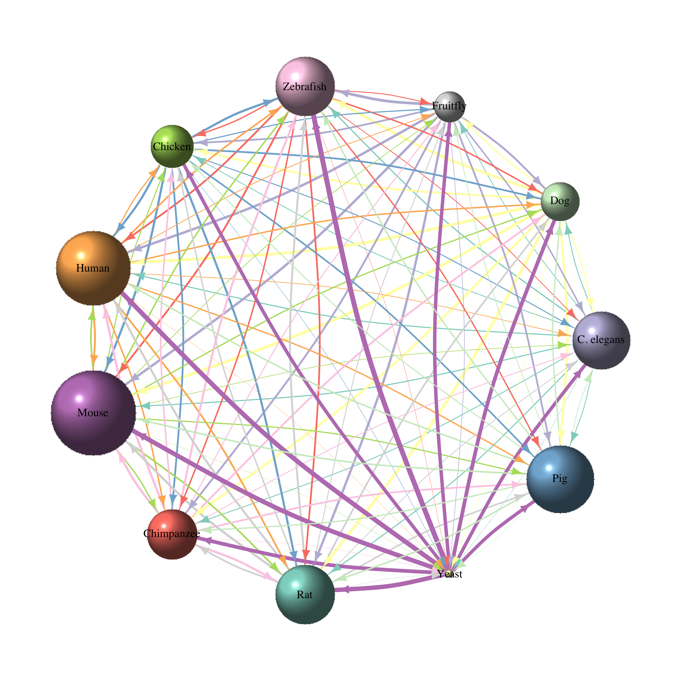

Gene homology Part 2 - creating directed networks with igraph
In my last post I created a gene homology network for human genes. In this post I want to extend the network to include edges for other species.
First, I am loading biomaRt and extract a list of all available datasets.
library(biomaRt)
ensembl = useMart("ensembl")
datasets <- listDatasets(ensembl)
For this network I don’t want to include all species with available information in Biomart because it would get way too messy. So, I am only picking the 11 species below: Human, fruitfly, mouse, C. elegans, dog, zebrafish, chicken, chimp, rat, yeast and pig. For all of these species, I am going to use their respective org.db database to extract gene information.
In order to loop over all species’ org.dbs for installation and loading, I create a new column with the name of the library.
datasets$orgDb <- NA
datasets[grep("hsapiens", datasets$dataset), "orgDb"] <- "org.Hs.eg.db"
datasets[grep("dmel", datasets$dataset), "orgDb"] <- "org.Dm.eg.db"
datasets[grep("mmus", datasets$dataset), "orgDb"] <- "org.Mm.eg.db"
datasets[grep("celegans", datasets$dataset), "orgDb"] <- "org.Ce.eg.db"
datasets[grep("cfam", datasets$dataset), "orgDb"] <- "org.Cf.eg.db"
datasets[grep("drerio", datasets$dataset), "orgDb"] <- "org.Dr.eg.db"
datasets[grep("ggallus", datasets$dataset), "orgDb"] <- "org.Gg.eg.db"
datasets[grep("ptrog", datasets$dataset), "orgDb"] <- "org.Pt.eg.db"
datasets[grep("rnor", datasets$dataset), "orgDb"] <- "org.Rn.eg.db"
datasets[grep("scer", datasets$dataset), "orgDb"] <- "org.Sc.sgd.db"
datasets[grep("sscrofa", datasets$dataset), "orgDb"] <- "org.Ss.eg.db"
datasets <- datasets[!is.na(datasets$orgDb), ]
datasets
## dataset description
## 9 rnorvegicus_gene_ensembl Rat genes (Rnor_6.0)
## 13 scerevisiae_gene_ensembl Saccharomyces cerevisiae genes (R64-1-1)
## 14 celegans_gene_ensembl Caenorhabditis elegans genes (WBcel235)
## 22 ptroglodytes_gene_ensembl Chimpanzee genes (CHIMP2.1.4)
## 26 sscrofa_gene_ensembl Pig genes (Sscrofa10.2)
## 32 hsapiens_gene_ensembl Human genes (GRCh38.p7)
## 36 ggallus_gene_ensembl Chicken genes (Gallus_gallus-5.0)
## 41 drerio_gene_ensembl Zebrafish genes (GRCz10)
## 53 dmelanogaster_gene_ensembl Fruitfly genes (BDGP6)
## 61 mmusculus_gene_ensembl Mouse genes (GRCm38.p5)
## 69 cfamiliaris_gene_ensembl Dog genes (CanFam3.1)
## version orgDb
## 9 Rnor_6.0 org.Rn.eg.db
## 13 R64-1-1 org.Sc.sgd.db
## 14 WBcel235 org.Ce.eg.db
## 22 CHIMP2.1.4 org.Pt.eg.db
## 26 Sscrofa10.2 org.Ss.eg.db
## 32 GRCh38.p7 org.Hs.eg.db
## 36 Gallus_gallus-5.0 org.Gg.eg.db
## 41 GRCz10 org.Dr.eg.db
## 53 BDGP6 org.Dm.eg.db
## 61 GRCm38.p5 org.Mm.eg.db
## 69 CanFam3.1 org.Cf.eg.db
Now I can load the Ensembl mart for each species.
for (i in 1:nrow(datasets)) {
ensembl <- datasets[i, 1]
assign(paste0(ensembl), useMart("ensembl", dataset = paste0(ensembl)))
}
specieslist <- datasets$dataset
And install all org.db libraries, if necessary.
library(AnnotationDbi)
load_orgDb <- function(orgDb){
if(!orgDb %in% installed.packages()[,"Package"]){
source("https://bioconductor.org/biocLite.R")
biocLite(orgDb)
}
}
sapply(datasets$orgDb, load_orgDb, simplify = TRUE, USE.NAMES = TRUE)
Once they are all installed, I can load the libraries.
lapply(datasets$orgDb, require, character.only = TRUE)
Because I want to exctract and compare information on homologus genes for all possible combinations of species, they need to have a common identifier. To find them, I first produce a list with all available keytypes and then ask for common elements using rlist’s list.common() function.
keytypes_list <- lapply(datasets$orgDb, function(x) NULL)
names(keytypes_list) <- paste(datasets$orgDb)
for (orgDb in datasets$orgDb){
keytypes_list[[orgDb]] <- keytypes(get(orgDb))
}
library(rlist)
list.common(keytypes_list)
## [1] "ENTREZID" "ENZYME" "EVIDENCE" "EVIDENCEALL" "GENENAME"
## [6] "GO" "GOALL" "ONTOLOGY" "ONTOLOGYALL" "PATH"
## [11] "PMID" "REFSEQ" "UNIPROT"
Entrez IDs are available for all species, so these are the keys I am using as gene identifiers. I am first creating a table of homologous genes for each species with all other species separately by looping over the datasets table.
for (i in 1:nrow(datasets)){
orgDbs <- datasets$orgDb[i]
values <- keys(get(orgDbs), keytype = "ENTREZID")
ds <- datasets$dataset[i]
mart <- useMart("ensembl", dataset = paste(ds))
print(mart)
if (!is.na(listFilters(mart)$name[grep("^entrezgene$", listFilters(mart)$name)])){
if (!is.na(listAttributes(mart)$name[grep("^entrezgene$", listAttributes(mart)$name)])){
print("TRUE")
for (species in specieslist) {
print(species)
if (species != ds){
assign(paste("homologs", orgDbs, species, sep = "_"), getLDS(attributes = c("entrezgene"),
filters = "entrezgene",
values = values,
mart = mart,
attributesL = c("entrezgene"),
martL = get(species)))
}
}
}
}
}
Now I sort and combine these tables into one big table and remove duplicate entries.
library(dplyr)
for (i in 1:nrow(datasets)){
orgDbs <- datasets$orgDb[i]
values <- data.frame(GeneID = keys(get(orgDbs), keytype = "ENTREZID"))
values$GeneID <- as.character(values$GeneID)
ds <- datasets$dataset[i]
for (j in 1:length(specieslist)){
species <- specieslist[j]
if (j == 1){
homologs_table <- values
}
if (species != ds){
homologs_species <- get(paste("homologs", orgDbs, species, sep = "_"))
homologs_species$EntrezGene.ID <- as.character(homologs_species$EntrezGene.ID)
homologs <- left_join(values, homologs_species, by = c("GeneID" = "EntrezGene.ID"))
homologs <- homologs[!duplicated(homologs$GeneID), ]
colnames(homologs)[2] <- paste(species)
homologs_table <- left_join(homologs_table, homologs, by = "GeneID")
}
}
colnames(homologs_table)[1] <- paste(ds)
assign(paste("homologs_table", ds, sep = "_"), homologs_table)
}
for (i in 1:nrow(datasets)){
ds <- datasets$dataset[i]
if (i == 1){
homologs_table_combined <- get(paste("homologs_table", ds, sep = "_"))
homologs_table_combined <- homologs_table_combined[, order(colnames(homologs_table_combined))]
} else {
homologs_table_species <- get(paste("homologs_table", ds, sep = "_"))
homologs_table_species <- homologs_table_species[, order(colnames(homologs_table_species))]
homologs_table_combined <- rbind(homologs_table_combined, homologs_table_species)
}
}
homologs_table_combined <- homologs_table_combined[!duplicated(homologs_table_combined), ]
Now each row in the table shows one gene and its homologs in all of the 11 species. Some genes have multiple homologs in other species (e.g. gene 44071 of the fruitfly has two homologs in zebrafish).
head(homologs_table_combined)
## celegans_gene_ensembl cfamiliaris_gene_ensembl
## 1 NA NA
## 2 NA 477699
## 3 NA 477023
## 4 173979 490207
## 5 179795 607852
## 6 177055 NA
## dmelanogaster_gene_ensembl drerio_gene_ensembl ggallus_gene_ensembl
## 1 NA NA NA
## 2 44071 NA NA
## 3 NA 431754 770094
## 4 38864 406283 NA
## 5 36760 794259 395373
## 6 3772179 541489 421909
## hsapiens_gene_ensembl mmusculus_gene_ensembl ptroglodytes_gene_ensembl
## 1 NA NA NA
## 2 2 232345 465372
## 3 30 235674 460268
## 4 34 11364 469356
## 5 47 104112 454672
## 6 52 11431 458990
## rnorvegicus_gene_ensembl scerevisiae_gene_ensembl sscrofa_gene_ensembl
## 1 24152 NA NA
## 2 24153 NA 403166
## 3 24157 854646 100515577
## 4 24158 NA 397104
## 5 24159 854310 NA
## 6 24161 856187 100737301
In order to create the cooccurrence matrix, I am converting gene names to “1” and NAs to “0” and multiply the matrix with its transposed self. This is now the basis for igraph’s graph_from_adjacency_matrix() function with which I’m creating a directed network. Before plotting the network, I am removing multiple entries and loops.
homologs_table_combined_matrix <- as.matrix(ifelse(is.na(homologs_table_combined), 0, 1))
co_occurrence <- t(as.matrix(homologs_table_combined_matrix)) %*% as.matrix(homologs_table_combined_matrix)
library(igraph)
g <- graph_from_adjacency_matrix(co_occurrence,
weighted = TRUE,
diag = FALSE,
mode = "directed")
g <- simplify(g, remove.multiple = TRUE, remove.loops = TRUE)
I am also preparing a node annotation table with colors for each species group and the count of unique gene identifiers for species.
datasets[, 2] <- gsub("(.*)( genes (.*))", "\\1", datasets[, 2])
datasets$description[grep("Saccharomyces", datasets$description)] <- "Yeast"
datasets$description[grep("elegans", datasets$description)] <- "C. elegans"
datasets$group <- ifelse(datasets$description == "Yeast", "fungus",
ifelse(datasets$description == "C. elegans", "roundworm",
ifelse(datasets$description == "Chicken", "bird",
ifelse(datasets$dataset == "Zebrafish", "fish",
ifelse(datasets$description == "Fruitfly", "insect", "mammal")))))
list <- as.character(unique(datasets$dataset))
library(RColorBrewer)
set3 <- brewer.pal(length(list), "Set3")
datasets$col <- NA
for (i in 1:length(list)){
datasets[datasets$dataset == list[i], "col"] <- set3[i]
}
no_genes <- as.data.frame(apply(homologs_table_combined, 2, function(x) length(unique(x))))
no_genes$dataset <- rownames(no_genes)
colnames(no_genes)[1] <- "no_genes"
library(dplyr)
datasets <- left_join(datasets, no_genes, by = "dataset")
datasets <- datasets[order(datasets$dataset), ]
I also want to have the proportion of genes that have homologs in each of the respective other species as edge attributes. I am preparing an extra table for this of all possible combinations of nodes.
for (i in 1:ncol(homologs_table_combined)){
input <- unique(na.omit(homologs_table_combined[, i]))
homologs_table_combined_subset <- homologs_table_combined[!is.na(homologs_table_combined[, i]), ]
for (j in 1:ncol(homologs_table_combined)){
if (i != j){
output <- unique(na.omit(homologs_table_combined_subset[, j]))
if (i == 1 & j == 2){
edge_table <- data.frame(source = colnames(homologs_table_combined)[i],
target = colnames(homologs_table_combined)[j],
weight = length(output)/length(input))
} else {
table <- data.frame(source = colnames(homologs_table_combined)[i],
target = colnames(homologs_table_combined)[j],
weight = length(output)/length(input))
edge_table <- rbind(edge_table, table)
}
}
}
}
list <- as.character(unique(edge_table$source))
edge_table$col <- NA
for (i in 1:length(list)){
edge_table[edge_table$source == list[i], "col"] <- set3[i]
}
And finally I can produce the plot:
V(g)$color <- datasets$col
V(g)$label <- datasets$description
V(g)$size <- datasets$no_genes/2000
E(g)$arrow.size <- 3
E(g)$width <- edge_table$weight*25
plot(g,
vertex.label.font = 1,
vertex.shape = "sphere",
vertex.label.cex = 3,
vertex.label.color = "black",
vertex.frame.color = NA,
edge.curved = rep(0.1, ecount(g)),
edge.color = edge_table$col,
layout = layout_in_circle)

Node size shows the total number of genes of each species and edge width shows the proportion of these genes with homologs in the respective other species. Edge and node colors show the 11 species and their outgoing edges.
Weirdly, the mouse seems to have more gene entries in the org.db library than human. If anyone knows why that is, please let me know!
## R version 3.3.2 (2016-10-31)
## Platform: x86_64-apple-darwin13.4.0 (64-bit)
## Running under: macOS Sierra 10.12.1
##
## locale:
## [1] de_DE.UTF-8/de_DE.UTF-8/de_DE.UTF-8/C/de_DE.UTF-8/de_DE.UTF-8
##
## attached base packages:
## [1] parallel stats4 stats graphics grDevices utils datasets
## [8] methods base
##
## other attached packages:
## [1] dplyr_0.5.0 RColorBrewer_1.1-2 igraph_1.0.1
## [4] rlist_0.4.6.1 org.Cf.eg.db_3.4.0 org.Mm.eg.db_3.4.0
## [7] org.Dm.eg.db_3.4.0 org.Dr.eg.db_3.4.0 org.Gg.eg.db_3.4.0
## [10] org.Hs.eg.db_3.4.0 org.Ss.eg.db_3.4.0 org.Pt.eg.db_3.4.0
## [13] org.Ce.eg.db_3.4.0 org.Sc.sgd.db_3.4.0 org.Rn.eg.db_3.4.0
## [16] AnnotationDbi_1.36.0 IRanges_2.8.1 S4Vectors_0.12.1
## [19] Biobase_2.34.0 BiocGenerics_0.20.0 biomaRt_2.30.0
##
## loaded via a namespace (and not attached):
## [1] Rcpp_0.12.8 bitops_1.0-6 tools_3.3.2
## [4] digest_0.6.10 tibble_1.2 RSQLite_1.1-1
## [7] evaluate_0.10 memoise_1.0.0 DBI_0.5-1
## [10] yaml_2.1.14 stringr_1.1.0 knitr_1.15.1
## [13] rprojroot_1.1 data.table_1.10.0 R6_2.2.0
## [16] XML_3.98-1.5 rmarkdown_1.2 magrittr_1.5
## [19] backports_1.0.4 htmltools_0.3.5 assertthat_0.1
## [22] stringi_1.1.2 RCurl_1.95-4.8